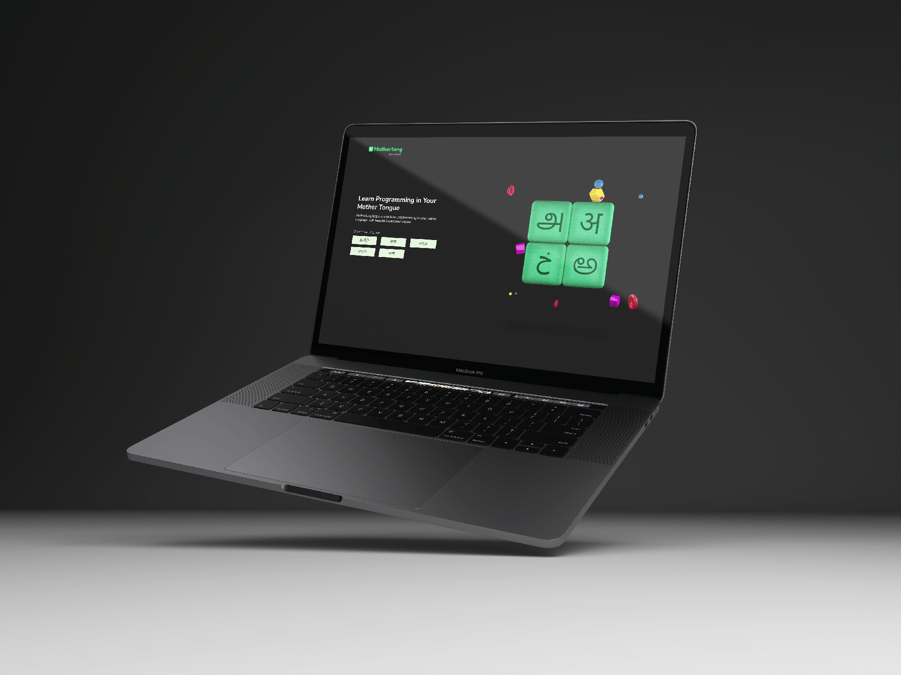

←Back
UX Design For Mothertong
“Mothertong” is a sub-product of Log2Base2, and I handled UX and all graphic design tasks for it.
Cinema 4D | Premiere Pro | Illustrator | Photoshop



Banner Animation
Making
←Back